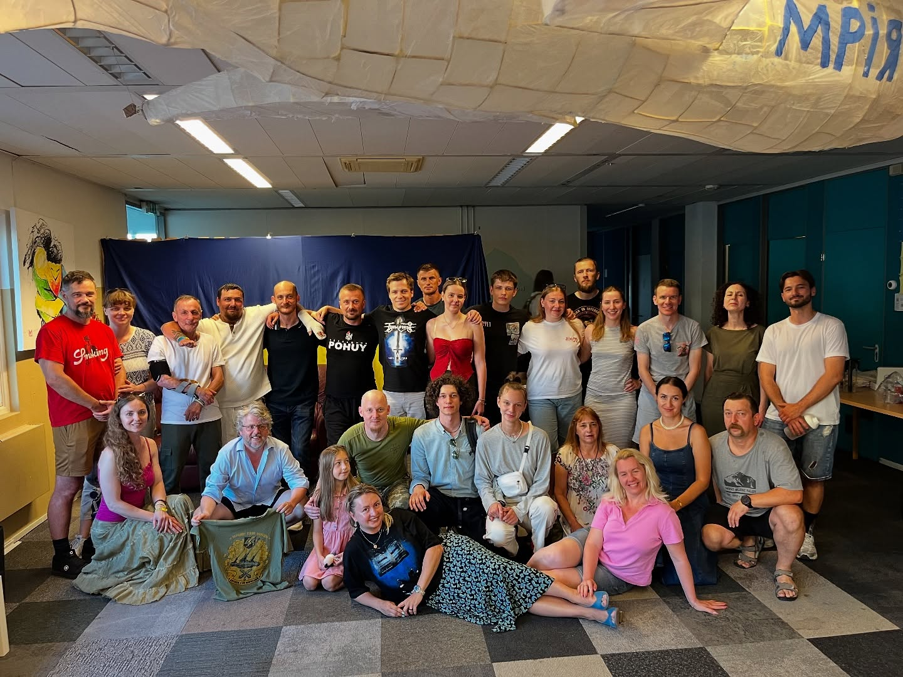
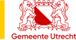
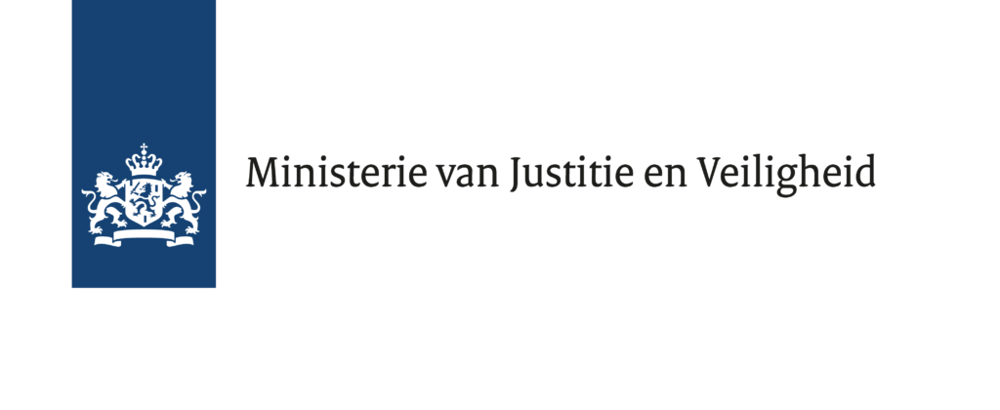

Thomas Klopp
PenningmeesterСкарбник
Biografie volgt. Dit is een tijdelijke aanduiding. Het persoonlijke verhaal verschijnt pas na goedkeuring.Біографія готується. Це тимчасовий текст. Особиста історія з’явиться після погодження.
01 / Ons verhaal01 / Наша історія
Vital’nya betekent ‘huiskamer’ in het Oekraïens. Op 1 april 2022, kort na het begin van de grootschalige Russische invasie, kwamen Oekraïners die hun thuis moesten verlaten hier samen. Met steun van Utrechtse vrijwilligers groeide de huiskamer uit tot een plek voor ontmoeting, cultuur en wederzijdse steun.Vital’nya українською означає «вітальня». 1 квітня 2022 року, невдовзі після початку повномасштабного російського вторгнення, тут зібралися українці, які мусили залишити свої домівки. За підтримки волонтерів з Утрехта Вітальня стала місцем зустрічей, культури та взаємодопомоги.

02 / Onze missie02 / Наша місія
Tijdens de oorlog bieden we een tweede thuis waar de Oekraïense gemeenschap sterker kan worden, met ruimte voor welzijn en een blijvende band met Utrecht, Nederland en Oekraïne.Під час війни ми створюємо другий дім, де українська спільнота може міцніти, дбати про добробут і підтримувати зв’язок з Утрехтом, Нідерландами та Україною.
Lees het geïllustreerde verhaalЧитайте ілюстровану історіюOekraïners beheren de huiskamer en organiseren zelf activiteiten, vanuit wat er in de gemeenschap nodig is.Українці самі керують Вітальнею та організовують заходи відповідно до потреб спільноти.
We ontmoeten en steunen elkaar. Bijeenkomsten bieden ruimte voor mentale veerkracht, eigenwaarde en een gevoel van veiligheid.Ми зустрічаємося й підтримуємо одне одного. Зустрічі допомагають зміцнювати психологічну стійкість, самооцінку та відчуття безпеки.
Met taallessen, workshops en culturele activiteiten brengen we Oekraïners en Utrechters samen. We organiseren ook humanitaire hulp voor getroffen regio’s in Oekraïne.Мовні заняття, майстер-класи та культурні події об’єднують українців і мешканців Утрехта. Ми також організовуємо гуманітарну допомогу для постраждалих регіонів України.
03 / Het team03 / Команда
Blader door zeven portretten. Open een foto om het verhaal te bekijken.Гортайте сім портретів. Відкрийте фото, щоб переглянути історію.
PenningmeesterСкарбник
Biografie volgt. Dit is een tijdelijke aanduiding. Het persoonlijke verhaal verschijnt pas na goedkeuring.Біографія готується. Це тимчасовий текст. Особиста історія з’явиться після погодження.
BestuurslidЧлен правління
Biografie volgt. Dit is een tijdelijke aanduiding. Het persoonlijke verhaal verschijnt pas na goedkeuring.Біографія готується. Це тимчасовий текст. Особиста історія з’явиться після погодження.
Biografie volgt. Dit is een tijdelijke aanduiding. Het persoonlijke verhaal verschijnt pas na goedkeuring.Біографія готується. Це тимчасовий текст. Особиста історія з’явиться після погодження.
Biografie volgt. Dit is een tijdelijke aanduiding. Het persoonlijke verhaal verschijnt pas na goedkeuring.Біографія готується. Це тимчасовий текст. Особиста історія з’явиться після погодження.
VoorzitterГолова правління
Biografie volgt. Dit is een tijdelijke aanduiding. Het persoonlijke verhaal verschijnt pas na goedkeuring.Біографія готується. Це тимчасовий текст. Особиста історія з’явиться після погодження.
Biografie volgt. Dit is een tijdelijke aanduiding. Het persoonlijke verhaal verschijnt pas na goedkeuring.Біографія готується. Це тимчасовий текст. Особиста історія з’явиться після погодження.
Biografie volgt. Dit is een tijdelijke aanduiding. Het persoonlijke verhaal verschijnt pas na goedkeuring.Біографія готується. Це тимчасовий текст. Особиста історія з’явиться після погодження.
04 / Onze partners04 / Наші партнери


Persoonlijk verhaal volgt.Особиста історія готується.
Hier komt ruimte voor een uitgebreider verhaal in de eigen woorden van dit teamlid. De tekst wordt geplaatst zodra het teamlid die heeft aangeleverd en goedgekeurd.Тут з’явиться розповідь цього учасника команди, викладена його власними словами. Ми додамо текст після того, як учасник надасть і погодить його.